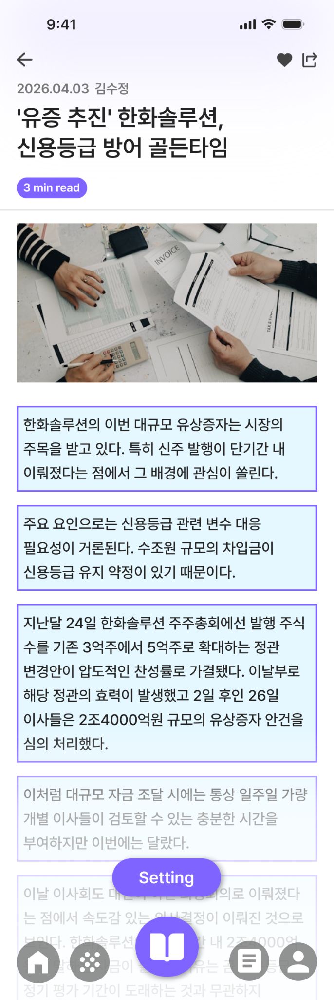
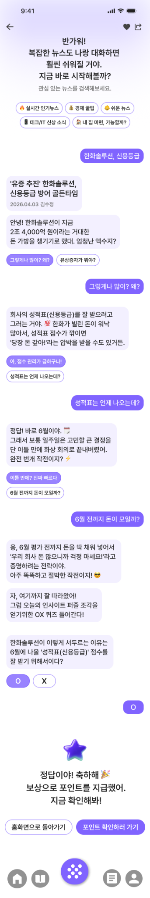

News Reading for Gen Z
I designed a news-reading service for Gen Z readers who find full articles daunting. It aims to make articles easier to approach and support sustained reading.
Why do people who are interested in the news still struggle to read full articles?
Review of news services, user interviews, think-aloud sessions, and grouping of recurring themes
The main barriers were long sentences, unfamiliar terms, missing context, and dense information, rather than a simple lack of reading ability.
Interest-based discovery, context previews, plain-language explanations, in-article definitions, adjustable detail, audio, and rewards
Offer context before readers open an article
The home and search screens introduce topics and key context before users open an article, making a full story feel less daunting.


Support readers as they work through the full article
I explored brief summaries, plain-language explanations, definitions, paragraph breaks, and audio on the article screen so readers could choose the support they needed.





Give readers a reason to return after finishing an article
A conversational quiz lets readers check what they understood, while points offer an incentive to come back for another article.


How did readers respond to the different forms of support?
Eight adults in their twenties read the same business article in its original format and in seven versions with different reading supports, thinking aloud as they went. This comparison summarizes what helped them and what challenges each approach introduced.
| Prototype | What readers experienced | Limitations and design considerations |
|---|---|---|
| C0 Original article | Readers saw the original text, photograph, and source without added support. | Technical terms, limited background knowledge, and uncertainty about the article's length made reading difficult. |
| C1 Narrow column | Some readers found the narrower, left-aligned text more orderly and easier to scan. | Awkward line breaks and extra scrolling could interrupt the flow of reading. |
| C2 Detail levels | Readers could choose how much detail to see; several found the middle level especially easy to read. | Overly condensed or casual wording risked removing context and weakening trust in the article. |
| C3 AI-generated illustrations | In some cases, illustrations helped readers picture abstract concepts or relationships in the article. | Poor image quality or a style that felt out of place could distract readers and undermine credibility. |
| C4 Color-coded flow | Color helped some readers follow the article's structure. | When the colors' meaning was unclear, they could confuse the reading order or draw attention away from the text. |
| C5 Paragraph breaks | Meaningful paragraph breaks and space between sections helped readers see the structure and keep their place. | Repeated colored boxes drew attention away from the content and added visual clutter. |
| C6 In-article definitions | Readers responded positively to definitions within the article; many chose this version as a favorite. | Small tap targets and the need to reopen definitions could make the interaction cumbersome. |
| C7 Suggested questions | Suggested questions helped readers explore the reasons and background behind the story. | The scope of the questions and the sources behind the answers should be clear, with links back to relevant passages. |
A format that feels easier to read does not necessarily preserve context or inspire trust. The findings point toward in-article explanations, selectable levels of detail, and clear paths back to the original text and its source.
This qualitative evaluation used one business article. The responses do not rank the prototypes or measure improvements in comprehension or reading speed. The service's audio, quiz, and rewards were not part of this comparison.
Abstract
This UI/UX research and service design project addresses the difficulty many Gen Z readers face when reading full news articles. Existing news services make it easy to discover breaking stories, but often provide less support for understanding an article once it is open.
The project focuses on helping readers start and keep reading the original article. The proposed journey offers context before reading, explanations during reading, and a simple way to reflect and continue afterward.
Problem
Many news services are designed for quick discovery and updates, with less attention to the experience of reading the full article. Long sentences, dense paragraphs, unfamiliar terms, and limited background knowledge can make a story feel demanding.
Even after an intriguing headline draws someone in, difficulty grasping the context or repeated interruptions in understanding can push them toward summaries or short videos. The issue lies in the barriers built into the reading experience, rather than a lack of interest in the news.
Research Process
I moved from problem framing and reviews of news services to user interviews, think-aloud sessions, and grouping of recurring themes. The service review compared article previews, summaries, glossaries, audio, and focus modes as ways to reduce reading effort.
In interviews and think-aloud sessions, I examined how people choose articles, what they expect before reading, where they stop, and how they feel about full-length news. I grouped recurring observations into four barriers: difficulty starting, missing context, unfamiliar terms, and difficulty continuing.
Insight
Participants often anticipated fatigue before they even began reading. Uncertainty about whether they could understand the whole article made it harder to start; unfamiliar terms and unbroken paragraphs made it harder to continue.
The design response was to build layers of support around the original article. Readers need context before they start, timely help as they read, and a gentle way to engage with what they have read afterward.
Design Application
I organized the service around discovery, understanding, and continued engagement. Interest-based categories and article cards make stories approachable, while a three-line preview provides context before the full article.
Within the article, plain-language explanations, definitions, paragraph breaks, audio, and adjustable levels of detail help readers engage with the full story. A conversational quiz and points extend the experience after reading.
Outcome
The final concept connects article discovery, reading support, and post-reading engagement in one service. It aims to help people keep reading full stories, not simply consume shorter versions of them.
This project explores how information structure and cognitive effort shape sustained reading. Observing where readers struggled informed both the service journey and the support offered within the article.